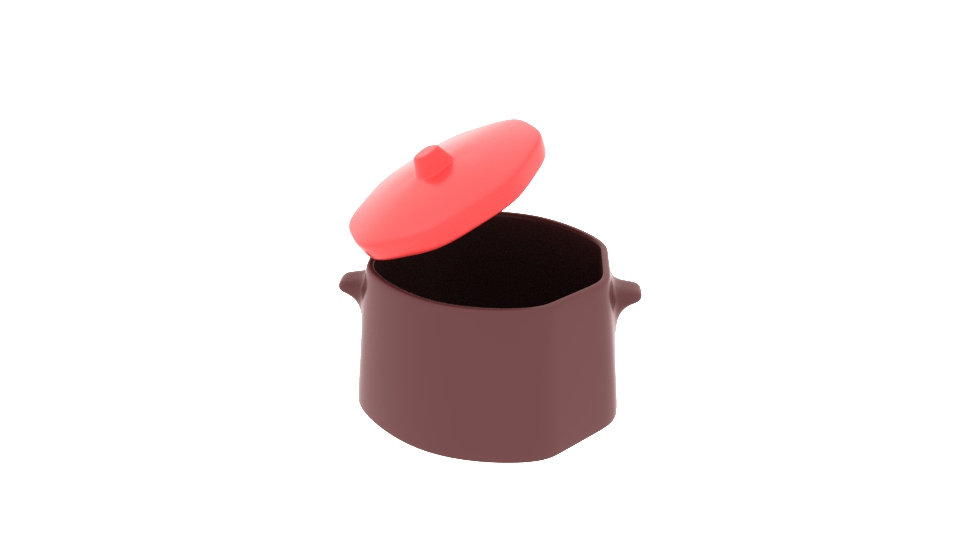

dingoeiwn

This is an animated interactive recipe toturial using augmented reality (AR).
It is designed to entertain and facilitate people who live away from home, and would like to make their home-made food themselves.
backstory telling page
animation reels page